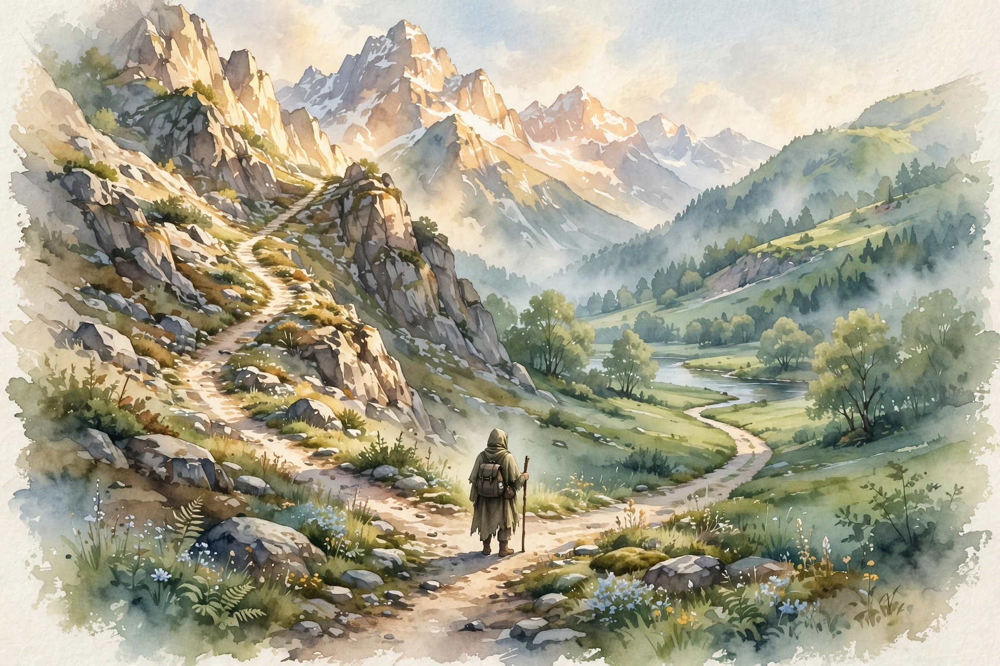

The Knowledge Project · Episode 2 · Companion
Chamath Palihapitiya
Chamath Palihapitiya splits the good life in two: financial freedom, which can be taught, and happiness, which cannot. This companion follows the full episode and pulls out the ideas on honesty, public conviction, great CEOs, and saying the uncomfortable thing.

Illustration. The fork in the road. Money follows a teachable playbook, happiness follows none. AI-generated watercolor made for this page.
Watch. The official episode video. Use the chapter menu above to jump to any section of this companion as you listen.
The Wisdom Index: every nugget in this companion
Part 1
Two Paths
Chamath draws a hard line between two goals. Financial freedom is a skill with a curriculum. Anyone can learn it, and he believes it can be taught. Happiness is different. It is personal, inward, and no curriculum covers it.
Most people mix the two. They chase money as if it were happiness, then feel cheated when the money arrives and the feeling does not. He wants the listener to pick the right game before the first move.
Two paths, two playbooks
A visual model of the episode's core distinction. No numbers, just the fork.
Source: episode transcript. Chamath presents financial freedom as teachable and happiness as a personal journey.
Nugget 1 · Goals
Name the game before you play it
What happened. Chamath splits the good life into two tracks. Money follows a teachable playbook. Happiness follows none.
Why it matters. People run the money playbook while expecting the happiness prize. The mismatch guarantees disappointment.
The principle. Decide which game you play. Then judge your progress by that game's scoreboard, not the other's.
Part 2
The Lying Child
Chamath describes himself as a child who lied. Lying was a coping tool, a way to survive a hard home. The habit followed him into adult life, where it turned from shield into weight.
His answer is radical honesty, starting with himself. You cannot fix a life you keep misdescribing. The first person to stop lying to is the one in the mirror.
Nugget 2 · Honesty
Stop lying to yourself first
What happened. Chamath traces his adult honesty back to a childhood of lying as self-protection. The tool outlived its use.
Why it matters. Coping strategies from childhood run on autopilot. They protect a child who no longer exists.
The principle. Audit your oldest habits. Keep the ones that still serve the adult. Retire the ones that served the child.
Part 3
Rates and Eras
Chamath was six years old in 1980. He grew up in a world where rates ran at fifteen to sixteen percent. Money had a price, and that price shaped every decision about risk.
Eras matter more than tactics. The same move that looks brilliant in a zero-rate world looks reckless when money costs sixteen percent. He judges investors by whether they see the era they are in.
The rate regime he grew up in
Hover any bar for detail.
Source: episode transcript for the 15 to 16 percent figure. The near-zero era is described in the episode as the regime that followed.
Part 4
The Three Calls
Chamath made his name on public predictions. He chose Bitcoin in 2012, Amazon in 2014, and Tesla in 2015. Each call looked odd at the time. Each one paid.
The method matters more than the picks. He bets on first principles, states the thesis in public, and lets the record judge him. Most investors hide their misses. He publishes his aims.
Three public calls, three years
Hover any marker for detail.
Source: episode transcript. Chamath lists Bitcoin in 2012, Amazon in 2014, and Tesla in 2015 as his public predictions.
Nugget 3 · Conviction
Make the call in public
What happened. Chamath stated his big theses out loud, years before they paid off, and let the record keep score.
Why it matters. Private opinions cost nothing. Public calls force clarity, because the crowd will remember.
The principle. Write down the thesis and the date. A forecaster with a public record learns faster than one with a private diary.
Part 5
What Makes a Great CEO
Chamath names the founders he rates highest: Elon Musk, Jeff Bezos, Jack Dorsey. He admires Bezos above all as a distributor of capital, the rare CEO who allocates money as well as he builds product.
He tests leaders with a strange question. Ask a CEO about a triangular office and watch the reaction. The great ones stay flexible. They play with the idea instead of rejecting it. Mental flexibility, he argues, is the trait that predicts everything else.
Nugget 4 · Leadership
Test for flexibility, not polish
What happened. Chamath probes CEOs with odd questions, like the triangular office, and watches whether the mind bends or snaps.
Why it matters. Polished answers can be rehearsed. Flexibility cannot. The future punishes rigid minds first.
The principle. When you judge a leader, test how they handle the unexpected. The reaction is the resume.
Part 6
Speaking as Dental Floss
Chamath compares speaking your mind to dental floss. Plaque builds up when you stay silent. Small unspoken truths harden into distance, then into resentment.
He also defends three honest words: I do not know. Most people would rather guess than admit ignorance. He treats the admission as strength, the start of learning instead of the end of status.
The episode closes on the eulogy Mona Simpson wrote for Steve Jobs in the New York Times. Chamath returns to it as a measure of a life: what you build for others outlasts what you collect for yourself.
Takeaways
- Separate the money game from the happiness game. Run each by its own scoreboard.
- Retire the coping habits of childhood. Audit what still serves the adult.
- State your thesis in public with a date. Let the record teach you.
- Speak the small truths daily, like floss. Plaque hardens when you wait.